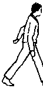
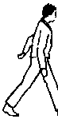

INMC News |
February/March 1980 · Issue 6 |
| Page 25 of 38 |
|---|
 “us”

“us”

We’ve had a couple of letters recently saying that the newsletters are very nice and all that, but how can we be objective when we all work for Nascom. Well this has shown us that we have never bothered to tell you more than the sketchiest details of who we are, or for that matter, how we ‘run’ the INMC.
Can we make it absolutely clear that none of us, except Kerr Borland, work for Nascom. For the sake of those who have joined the INMC over the last year, we will tell you how this came about, and a bit more about ourselves. The Committee is a group of individuals who were, for various reasons, known to Nascom from before, or shortly after, the Nascom 1 launch. One night early last summer we met at the invitation of Kerr, and the idea of an ‘ad hoc’ INMC committee, to organize a newsletter, was tossed around. As the evening progressed, over certain liquid refreshments, a degree of amicable agreement was reached; to the extent that we ended up having to phone each other the following morning to find out what we had agreed to. At that time we were Richard Beal, Howard Birkett, Paul Greenhalgh, and David Hunt. Paul worked for Nascom, and we thought he would be good liason between us, and the product we were to support (may be we thought he would be a good source of inside information as well, but this did not prove to be the case). So over a period of time the first couple of newsletters saw the light of day, and our appeals for contributions started to be answered. Paul left Nascom, and strangely, Howard joined them. As Howard considered that he had too much of a vested interest in Nascom, he resigned from the INMC committee, to be replaced by two volunteers who had come to light amongst the membership; Derek Brough, and Eddie Pounce.
As far as the committee goes, our main resposibilty is to produce a newsletter once every couple of months (sometime perhaps we will reach our schedule), to keep an eye on the INMC library, and to act as a filter for, and if possible, answer any corespondence which can’t be dealt with by dealers or Nascom engineering. In return for this, and our general support of the product, Nascom provide us with a letter box at Chesham, and secretarial services to handle distribution of programs from the library, and the newsletter mailing list.
We are independant of Nascom in most repects, although we appreciate the help they give us. The only stipulation (or better, restraint) imposed by Nascom is that we must not print derogatory comment on any other product which directly competes with Nascom, which makes sound commercial sense. We hope that we are objective in our aims, if Nascom ever ‘lay an egg’ over some product or other, we hope we will be the first to say so.
Just so you know a bit more about the INMC commitee, we’ve each produced a ‘potted’ history. For professional reasons we will not name the Committees members’ employers. So here goes:
Richard Beal has been with the commitee from the start. He is 29, married and lives near Richmond Surrey. He has worked with computers for about 8 years, and until recently was a systems analyst. He is is now working for a large international management consultantcy. He owns a 16K Nascom 1 (which must qualify as being one of the first to come from Chesham), a 32K Nascom 2 running ZEAP, Naspen, and 8K Basic.
| Page 25 of 38 |
|---|